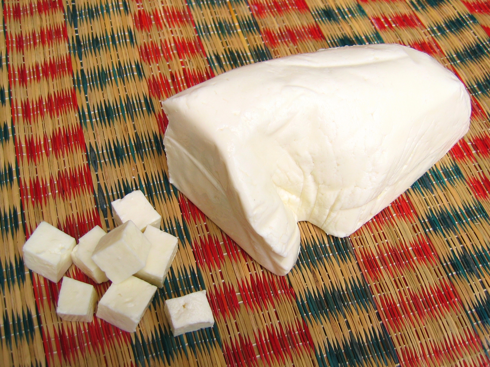

Paneer recipe

Ingredients required for making Paneer:
Once you have the ingredients follow the steps below:
- Heat milk to the point where it gets a little foamy on the top.
- Take the milk off of heat and add lemon juice/vinegar to it.
- Your milk must've curdled by now if not boil it again.
- Line colander with a cheesecloth and strain the curds formed.
- Rinse with cold water and squeeze any liquid that remains.
- Put a heavy object on top of the cheesecloth for about 10 minutes.
- Remove the paneer from the cheesecloth and you are good to go!
Return to Homepage